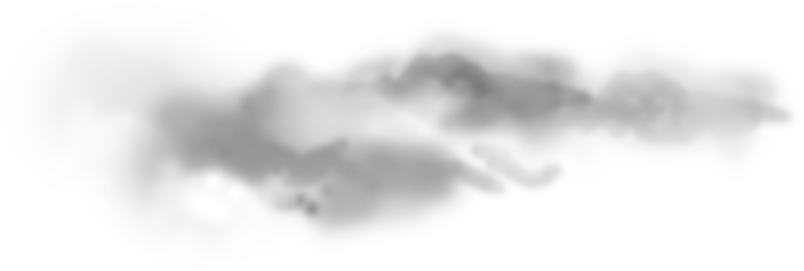
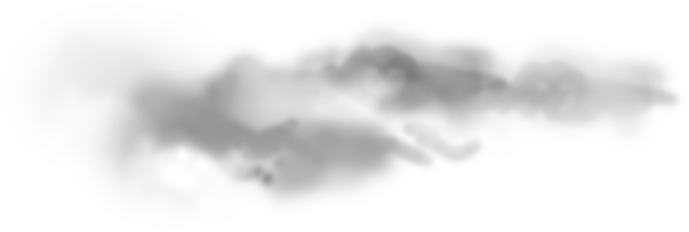

Sung Jin-Woo
He is a
 



About
He is Sung Jin-Woo (성진우).
Sung Jin-Woo (성진우) is the protagonist of Solo Leveling. He was previously known as the World's Weakest Hunter and delved down the path of becoming the World's Strongest Hunter after he was Reawakened and became a Player.
Jin-Woo was reawakened as a Player after surviving the Cartenon Temple and completing the secret quest "Courage of the Weak". The mysterious System has allowed Jin-Woo to limitless level up and increases his strength, unlike all hunters, who are unable to increase their strength unless reawakened.
Appearance
Prior to his Reawakening
Jin-Woo was a young man of average height with long black hair and grey eyes; his build was frail, and despite being considered stronger than an ordinary human, he was the weakest among Hunters. Before the D-Rank Dungeon Incident, he wore a gray hoodie and brown undershirt alongside blue jeans.
After his Reawakening
After his Reawakening as a Player, he grew a few inches taller; his facial features became a lot sharper, and he gained a lean/muscular build. His whole demeanor also became more serious and intimidating. When fighting enemies or when in use of his powers, Jin-Woo's eyes glow of a pale blue. In some cases, an ominous aura seeps from Jin-Woo alongside dark lightning.
Personality
Before Reawakening
"It's a given that I'll be betrayed because I'm weak."
Before his Reawakening, Jin-Woo was a kind, nervous, and very timid young man. Despite being so, he respected his fellow Hunters and was brave enough to continue fighting in Dungeons to earn money to care for his sister and to pay for his mother's medical bills; despite being the weakest hunter that had existed.
Jin-Woo is also shown to be an intelligent person, being able to stay calm under pressure as he figured out the clues to fighting the boss of the Double Dungeon while most of the experienced hunters in their party panicked and were killed by the statues when they were trying to escape. This also makes him slightly cautious as he hesitated to reveal his growing strength until he was sure he could protect his family.
After his reawakening, he strives to become a stronger hunter than before. His sole focuses were getting his daily missions done and leveling up via dungeon crawling. He is seen not to be hesitant with his actions and would injure and significantly harm anyone who threatens himself or those he genuinely cares for. Despite this, he is unwilling to draw the shadow of innocent Hunters/civilians. He has a great love for those close to him, including his family and close friends such as his sister Sung Jin-Ah. He is easily enraged if anyone dear to him was injured or threatened and went to great lengths to protect them. Although Jin-Woo was shown to be indifferent when it to money, wealth, and even humanly desires.
After Reawakening
"This isn't a coincidence or good will. This is what the system needs. A strong Sung Jin-Woo."
Jin-Woo has displayed a substantial increase in confidence after receiving the mysterious 'Double Awakening'. He has become powerful yet maintains a relaxed personality. Jin-Woo does not falter in crisis or a threat and is rarely angered. He has displayed less emotion, which may be caused by the use of the system as mentioned by Jin-Woo himself when he states, "One of my emotions died," referring to the possibility that the power of the System is affecting him in some way. Despite this, he rarely questions the System and its unknown origins, which are later explained in the story. He also tends to smile when facing a difficult situation and always maintains the confidence of himself coming out on top in the end.
Even after achieving great power, Jin-Woo does not maintain an aggressive and overconfident against others. He is described by others to be easy to talk to and much more accepting of certain situations he may face. In one instance, two American Hunter Association members pointed guns at Jin-Woo as a result of a misunderstanding. However, Jin-Woo did not use his powers but rather calmly diffused the situation.
Jin-Woo consistently defines his actions by a set of moral codes. He refuses to resurrect innocent humans to serve as shadow soldiers and does everything to protect those weaker than him. Jin-Woo has, on a few occasions, breached rulers.
After Reawakening
"If you guys are hunters, then try hunting...Hunters were made to hunt anyway."
Ability
Skills
Active Skills
- Skill : [Sprint WB /Dash NV ] - Movement speed will increase by 30%. ==> 1 mana will be consumed every minute.
- Skill : [Vital Strike WB /Vital Points Targetting NV ] - (70 mana/dagger only) - Dealing critical damage if you attack foe's vital areas.
- Skill : [Stealth] - (200 mana) - Your appearance and all traces of you will be hidden instantly. ==> 10 mana will be consumed every second.
- Skill : [Dominator's Touch] - (No mana required) - You can control objects without touching them.
- Skill : [Dagger Throw] - (30 mana, dagger only) - Deal damage by throwing your dagger. As the skill 's level increases, damage and accuracy will increase.
- Skill : [Bloodlust WB /Killing Intent NV ] - (100 mana) - Using strong energy, the selected target is put in a state of fear for 1 minute. Several targets can be selected. Effect 'fear': All stats -50%.
Passive Skills
- Skill : [Perseverance WB /Unyielding Spirit NV ] - As his health is below 30%, [Perseverance] will active. Damage taken is reduced by 50 %.
- Skill : [Will to Rehabilitate] - Temporary ability. Any dismembered body parts are restored. This ability take on effect after Sung Jin Woo got his Reawakening.
- Skill : [Longevity] - permanent effect. All diseases, poisons and status effects are healed, and sleeping will explosively increase regeneration ability.
- Skill : [Advanced Dagger Arts] - Because he used daggers for an extended period of time he can now use daggers more proficiently. When a dagger is used, the attack with it gains 33% additional damage.
- Buff : [Rasaka's Steel Scales] - Rasaka's Venom will harden the skin and reduce all physical damage by 20%.
Evolved Skills
The level cap for a skill was 3. And when a skill reached the level cap, the number would change to ‘MAX’ and stopped rising any further than that. However, if he continued to increase his proficiency with the skills, they would eventually evolve into their ultimate versions. The gap between the skill’s effectiveness before and after its evolution was noticeably huge.
- The Skill (Sprint WB ) Dash NV - had evolved into ‘Quicksilver’.
- The Skill (Vital Strike WB ) Vital Points Targetting NV - had evolved into '(Mutilate WB ) or Violent Slash NV '.
- The Skill Dagger Throw - had morphed into ‘Dagger Rush’.
- And Skill (Dominator's Touch WB ) Ruler's Reach NV - had evolved into ‘Ruler’s Authority’.
- Even the passive skill that aided with handling daggers and shortswords, (Advanced Dagger Arts WB ) High Grade Dagger Technique NV - had evolved into ‘Master of Shortsword’.
Job Specific Skills
- Skill : [Shadow Extraction] - (no mana required) - A shadow soldier is created from a body without life by taking out its mana. The chance of failure increases the higher the target's stats are, and the more time passed since the target's death. Shadows able to be extracted: 820 (Manhwa).
- Skill : [Save Shadow] - (no mana required) - Jin-Woo absorbs the created shadow soldiers and save them. Saved soldiers can be summoned and reabsorbed whenever and wherever the animator desires. Saved shadows: 155 (Manhwa).
-
Reanimation :
- Can reanimate souls from dead bodies, and store them. The number of souls that he can store and reanimate depends on the level of his intelligence. The chances of being able to reanimate a body depend on the time gap between reanimating and the death of an individual and the gap between his strength and the individual he is trying to reanimate. He can only attempt to reanimate the body only 3 times. As long as he has mana, his shadow is basically immortal as they can regenerate endlessly. Shadow Exchange :
- Can switch positions with any previously summoned shadow. It does not appear to have a distance limit. It has a cooldown of 3 hours at the base level of 1. At level 2, it's reduced to 2 hours. Ruler's Authority :
- A form of telekinesis with his hands. It is later revealed that it's actually being able to freely control mana. Domain of the Monarch :
- Shadows within the area of influence gained enhance stats. It also replaces the colors of above Knight Grade Shadows from Blue-Black to Purple-Black. Naming :
- Shadows higher than rank knight is considered to be Elite, and can be named.
Shadow Monarch
Titles
-
Wolf Slayer :
- A title given to a hunter experienced in slaying wolves. (40% increased stats against beast-type monsters). The One Who Overcame Adversity :
- A title given to those who overcame adversity heroically. (Your stats increase proportionally to your missing health. 1% stat increase every 1% HP missing). Devil Hunter :
- A title given to a hunter that was able to kill the King of the Demons, Baran of the White Flame. The Mighty power recognizes the player as the master. (Mana +100,000 'Black Heart', Light Novel, Chapter 162).
- Igris (Red Knight, former guardian of the throne room in class change quest dungeon, level of power - S class)
- 16 Shadow Infantry
- 3 Shadow Magicians
- Tank (Ice Bear Leader)
- Iron (Tank Class, Kim Chul A-Class Hunter, Chapter 54)
- Shadow High Orcs (A-Ranked Gated)
- Tusk (Elite Knight Class, Molar, The Great Kargalgan, Boss of High Orcs A-Ranked Gate)
- Kaisel (Kaisellin, the Wyvern from Demon Castle, Chapter 108)
- Shadow Ants
- Beru (General Class, Ant King of the Jeju Island S Rank Gate)
- Jima (Elite Knight Class, Boss of A-Ranked Gate)
- 29 Elite Giants (No.6, The Captain of the Giant Corps)
- Kamish (Extracted successfully but due to time taken was too long after it died (8 years) hence it failed)
- Greed (General Class, Hwang Dong-Su S-Class Hunter)
- 100,000 soldiers (True Shadow Legion from the gate)
- Belion (Four wings, The General Commander of 100,000 soldiers, Chapter 225)